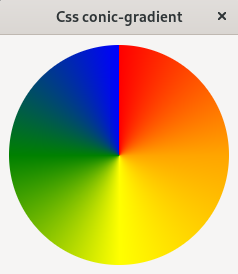
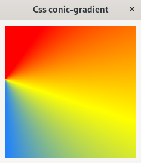
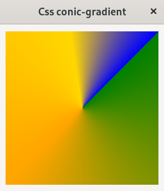
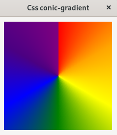
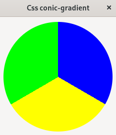
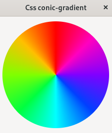
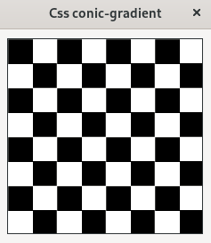

(update:2025/7/25)
扇形グラデーションは、中心点の周りを時計回りに回転しながら色が変化する像を作成します。
扇形グラデーションの基本は、二色の指定です。中心のデフォルトは at center(ウィジットの中心)です。グラデーションの開始位置は12時の方向となります。
/* 円 */
#m-label {
background-image: conic-gradient( red, orange, yellow, green, blue );
border-radius: 50% 50%;
}

グラデーションの中心位置を指定します。デフォルトは at center となります。グラデーションの中心はウィジットの中以外に外側にも指定することができます。次表に中心位置の指定方法を列挙します。
| 書 式 | 内 容 |
|---|---|
| at top | 領域の上辺が中心となる |
| at top right | 領域の右上角が中心となる |
| at right | 領域の右辺が中心となる。 |
| at bottom right | 領域の右下角が中心となる。 |
| at bottom | 領域の下辺が中心となる。 |
| at bottom left | 領域の左下角が中心となる。 |
| at left | 領域の左辺が中心となる。 |
| at top left | 領域の左上角が中心となる。 |
| at center | 領域の中央が中心となる。 |
| at 任意の数値＋単位 | 中心の座標を単位付きの数値で指定。基準は領域の左上角。 |
| at ％値 | 中心の座標を％値で指定。値は、領域の幅と高さに対する割合 |
#m-label {
background-image: conic-gradient(
at 0% 40%,
red 10%,
yellow 30%,
#1e80ff 50%
);
}

グラデーションの角度を指定します。 from のあとに角度を記入します。デフォルトは 12時の方向となります。角度の単位は、度(deg)、グラード(grad)、ラジアン(rad)、回転数(turn)が使用できます。(１つの円としては、360deg、400grad、2πrad、1回転(turn)です。)
#m-label {
background-image: conic-gradient(
from 45deg,
green,
orange 50%,
gold 85%,
blue
);
}

扇形グラデーションの色経由点(color stops)は、角度を表します。角度の単位は、度(deg)、グラード(grad)、ラジアン(rad)、回転数(turn)が使用できます。色経由点は昇順に並べなければなりません。もし、後に指定される色経由点の数値が小さい場合は、その後の色経由点によって上書きされ、不連続の色の変化を生じます。
#m-label {
background-image: conic-gradient(
red 0deg,
orange 60deg,
yellow 120deg,
green 180deg,
blue 240deg,
indigo 300deg,
purple 360deg
);
}

円グラフを表現するためには、隣接する色が同じ色経由点値を持つ、複数の色経由点を指定します。
#m-label {
background-image: conic-gradient(
blue 120deg,
yellow 120deg 240deg,
lime 240deg
);
border-radius: 50%;
}

色相環は、色相を円環状に配置したもので、色の関係性を視覚的にわかりやすく表現したものです。hsv色相環モデルでは、色を色相(Hue)、彩度(Saturation)、明度(Value)の三つの要素で表現しています。色相環は、光の波長の違いによって知覚される色の変化を連続的に円環状に配置したものです。色相環を用いることで、補色(反対側の色)や類似色(隣り合った色)など色の関係性を把握しやすくなります。色相は、0～360度で指定します。彩度は色の鮮やかさ・濃さ を表し、0%～100%で指定します。明度は色の明るさ・暗さを表し、0%～100%で指定します。
#m-label {
background-image: conic-gradient(
hsl( 360, 100%, 50% ),
hsl( 315, 100%, 50% ),
hsl( 270, 100%, 50% ),
hsl( 225, 100%, 50% ),
hsl( 180, 100%, 50% ),
hsl( 135, 100%, 50% ),
hsl( 90, 100%, 50% ),
hsl( 45, 100%, 50% ),
hsl( 0, 100%, 50% ),
);
border-radius: 50%;
}

市松模様は正方形を市松状に配置したものです。
#m-label {
background-image: conic-gradient(
#fff 0.25turn,
#000 0.25turn 0.5turn,
#fff 0.5turn 0.75turn,
#000 0.75turn,
);
border: 1px solid;
background-size: 25% 25%;
}

#include <gtkmm.h>
#include <iostream>
#include <gtkmm/cssprovider.h>
class MyWindow : public Gtk::Window
{
public:
MyWindow();
virtual ~MyWindow() = default;
private:
Gtk::Box m_box;
Gtk::Label m_label;
protected:
// signal handler:
static void on_parsing_error( const Glib::RefPtr<const Gtk::CssSection>& sec, const Glib::Error& err );
// child widgets:
Glib::RefPtr<Gtk::CssProvider> m_refCssProvider;
};
MyWindow::MyWindow()
{
set_title( "Css radial-gradient" );
set_child( m_box );
m_box.set_margin( 10 );
m_label.set_size_request( 220, 220 );
m_label.set_name( "m-label" );
m_box.append( m_label );
// Load extra CSS file
m_refCssProvider = Gtk::CssProvider::create();
Gtk::StyleContext::add_provider_for_display( get_display(), m_refCssProvider,
GTK_STYLE_PROVIDER_PRIORITY_APPLICATION );
m_refCssProvider->signal_parsing_error().connect(
[]( const Glib::RefPtr<const Gtk::CssSection>& sec, const Glib::Error& err )
{ on_parsing_error( sec, err ); }
);
m_refCssProvider->load_from_path( "style.css" );
}
void MyWindow::on_parsing_error( const Glib::RefPtr<const Gtk::CssSection>& sec, const Glib::Error& err )
{
Gtk::CssLocation s_location, e_location;
std::cerr << "on_parsing_error(): " << err.what() << std::endl;
if ( sec ) {
Glib::RefPtr<<const Gio::File> file = sec->get_file();
if ( file ) {
std::cerr << " URI = " << file->get_uri() << std::endl;
}
s_location = sec->get_start_location();
e_location = sec->get_end_location();
std::cerr << " start : " << s_location.get_lines()+1
<< ", end : " << e_location.get_lines()+1 << std::endl;
std::cerr << " s_pos : " << s_location.get_line_chars()
<< ", e_pos : " << e_location.get_line_chars() << std::endl;
}
}
int main( int argc, char* argv[] )
{
auto app = Gtk::Application::create( "gtkmm4.example" );
return app->make_window_and_run<MyWindow>( argc, argv );
}